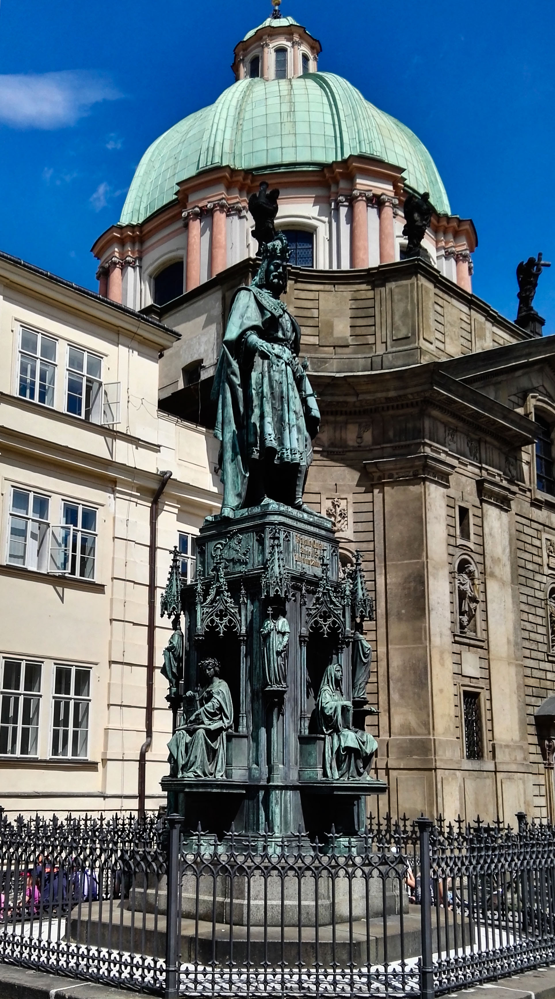
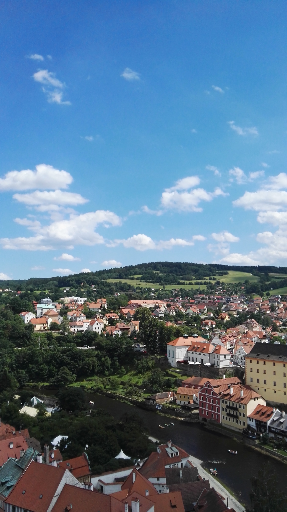
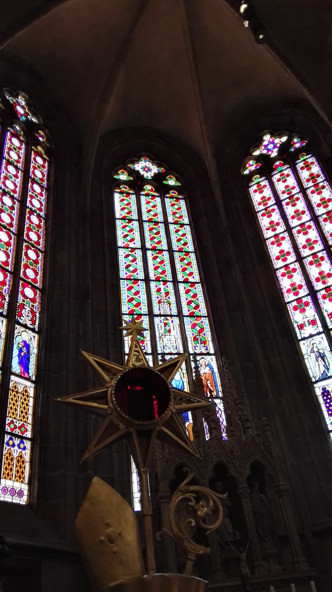
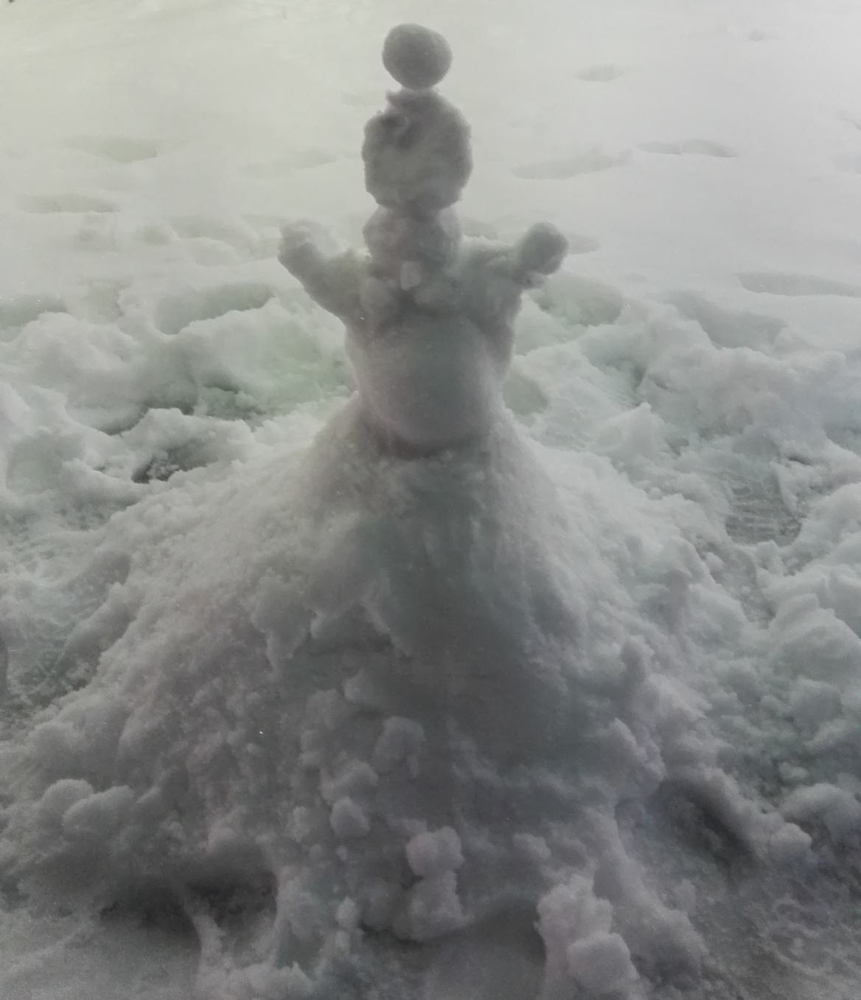
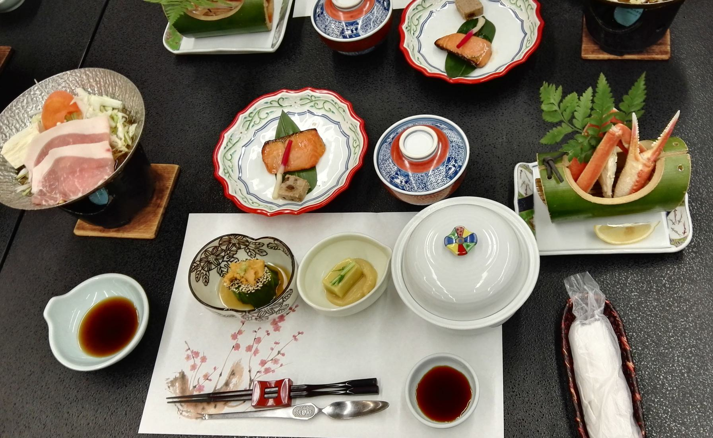
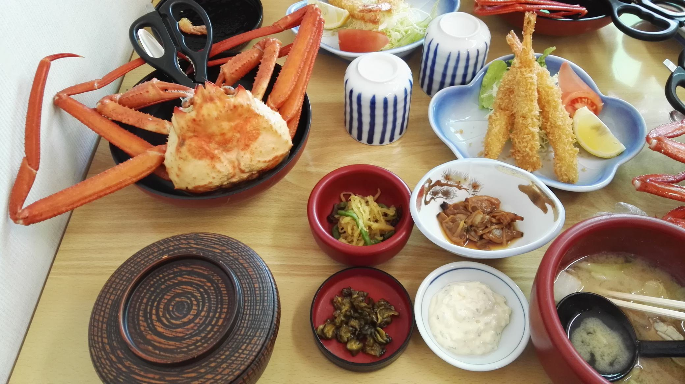

这里是周游世界的回忆录
回想起来，我真的去了好多好多地方。人类世界中有八大洲，我去过其中三个（哎呀也不多嘛）。
那就想起什么写什么吧~
东南亚
好小的时候去的了。记忆中这些地方都是…….大沙滩，大海，大船，大海鲜（hhhhh）
新加坡&马来西亚
记得那里有很好吃的士多啤梨雪糕。
菲律宾
潜水好玩嘿嘿。看见了海蛇（害怕）
美国
说是美国，其实我只去过美西。
黄石公园的景色太美了！这辈子一定要再去一次！
欧洲
希腊
2023记：
好像有八年前了吧。地中海边的天色无比湛蓝。爱琴海的日落是我看过最美的日落（纯粹意义上的美）。
意大利
一切都有浓郁的西方艺术气息。罗马竞技场很震撼！
东欧
波兰、捷克斯洛伐克、奥地利… 啊啊啊不记得了！
盐矿好好玩。好多皇宫。
- 那时候的拍照技术真的…一言难尽。能看的只有这么一点点了！
|  |  |  |
|---|---|---|
| 不知道什么雕像… | 不知道什么小镇… | 不知道什么教堂… |
英国
中考完的暑假来了这里！亲眼看到了传说中那颗砸牛顿的苹果树。我也想要祖师爷那么智慧的脑袋！！！
日本
去过两次~
很快乐的新泻游学！最青春的年纪和最美好的同学友谊都在那个时空~
|  | |
|---|---|
| 南方的孩子看到雪很兴奋~ | 堆雪人 |
|  |  |
|---|---|
| 好吃的*1 好多没见过的东西。什么，原来是刺身？！被我放到小锅里煮熟了呜呜 | 天妇罗&好大的蟹！ |
第二次…狠狠的在秋叶原买东西！逛了三天三夜，收获了一个行李箱的手办（喂喂不许嘲笑我哦！）
结语
周游世界虽然难以称作“梦想”，但确实是我这辈子想做的事情。
有些地方虽然我尚未涉足，但这辈子决定一定要去一次（嗯）。
- 我想去世界的尽头——冰岛。烈焰与冰川的交融无比瑰丽。自然所渲染的、雕刻的一切都太过迷人。
- ……